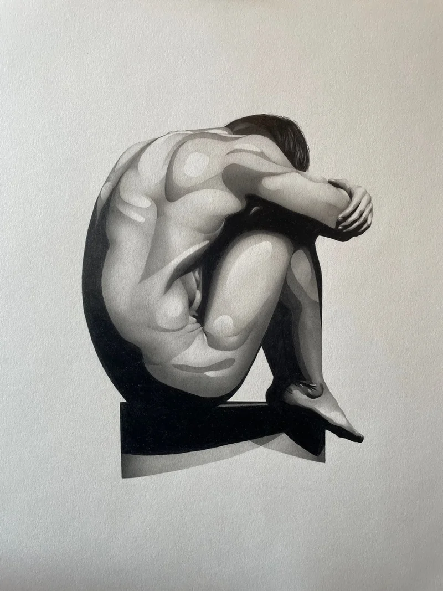
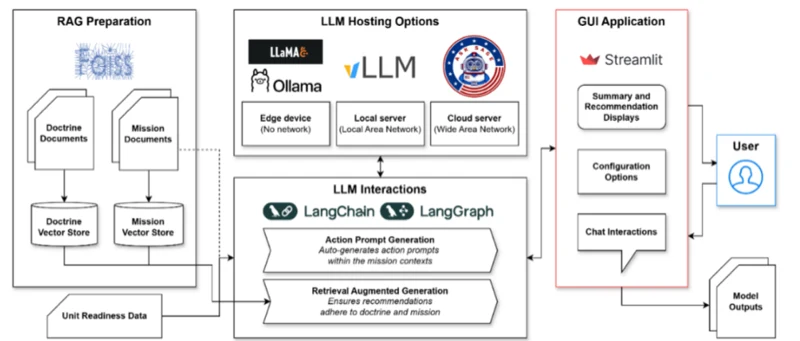
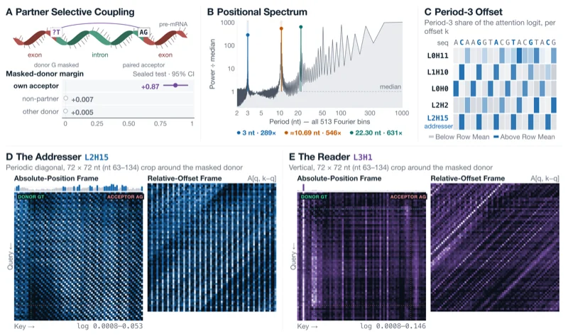
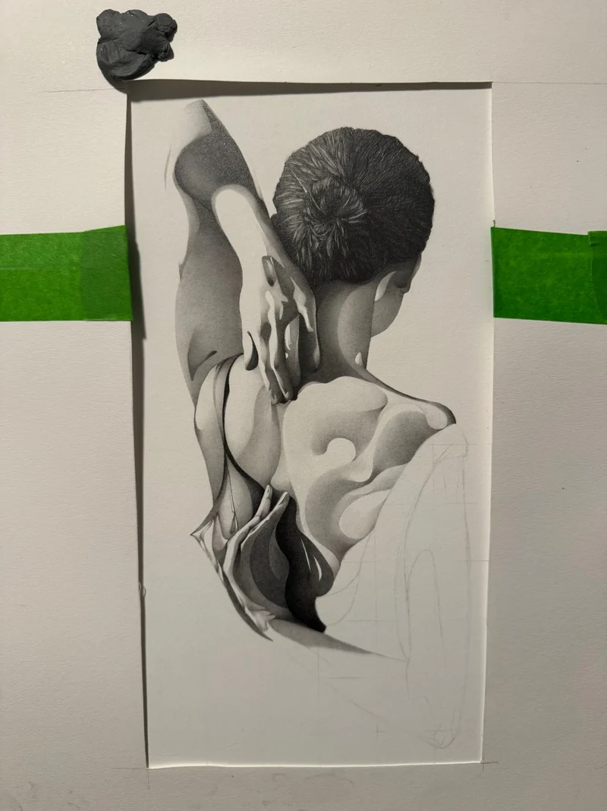
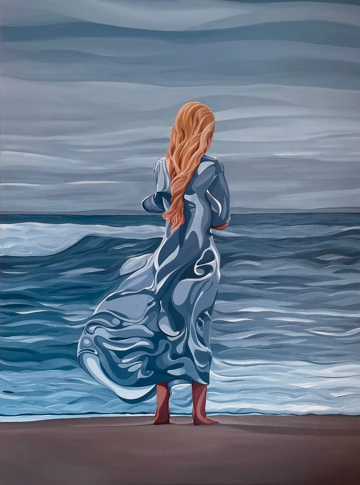
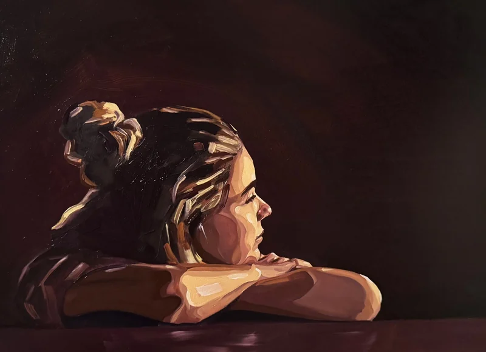
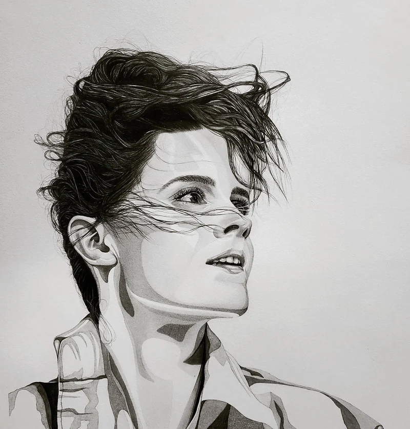

Portfolio · Program in Media Arts and Sciences · Fall 2027
How can AI learn an unfamiliar environment by experimenting on the devices already in it, and turn what it learns into awareness people can act on?
I draw and paint. I served as a nuclear submarine officer, and I now build AI systems at Draper Laboratory.
I believe you have to be a good artist to be a good researcher, and a good researcher to be a good engineer.

How to read this portfolio
Responsive Environments
Start with AI-Firmware and the sculpture of A little life, then the art at the end. An agent that can learn any sensor it finds is a way for a network to assemble itself, without anyone writing the drivers.
Multisensory Intelligence
Start with GFM-Interp, then CIPHER. One asks what a scientific foundation model has actually learned. The other asks how to keep a model’s recommendations traceable and honest, because a bad one costs trust.
Signal Kinetics
My statement and CV carry this application. The closest work here is AI-Firmware: agents that learn sensors deployed where people cannot easily reach them.
Work
A little life, as a sculpture
A drawing becomes a sculpture, and the room learns to light it. The agent finds the lights and sensors, works out what each one does, and lights the figure the way I drew it.
AI-Firmware
Give an agent the firmware from a device it has never seen. It works out what the device does and writes a standard interface any AI or person can use.

CIPHER
Turns a new operations order into a map, a timeline, and a plan a leader can question, with every output traceable. To appear at I/ITSEC 2026.

GFM-Interp
A masked genome model finds splice sites it was never trained to find, using boundary content and a learned three-nucleotide wave.
Multimodal chest X-ray
Can clinical context make an image classifier better at finding anomalies? A fine-tuned vision model fused with standardized patient records.

In the studio
A drawing in progress, taped to the board. Every piece starts as faint construction lines and a study of where the light falls.
Writing
-
Retrieval-Augmented LLMs for Military Decision Support and Evaluation
-
Mechanistic Discovery in a Genomic Foundation Model Reveals a Donor-Acceptor Computation
Where this comes from
I learned to draw from my uncle. I envied how easily he could put what he saw onto paper, and I have been working toward that ease ever since. Most of what follows is figures turned inward or away, in graphite on vellum Bristol and in oil. I build each one from hard-edged shapes of light laid over smooth gradients, because that is how I come to understand a form: by watching where the light breaks across it.
It is also how I work on a model or a microcontroller. I cannot open either one and simply read it. I probe it, watch how it responds, and draw the structure out from the surface.



About
I studied computer science at the Naval Academy and served as a nuclear submarine officer, where I learned to train, lead, and certify a crew in work that tolerates no failure. The Navy taught me to lead peers and to understand people from every walk of life. It did not teach me to engineer past the edge of what was already established, so I went looking for that in computer science and in the studio. I now build AI systems at Draper Laboratory. At MIT I want to make that work tangible: agents that learn the physical world by working in it.
Applying to
- Responsive Environments
- Multisensory Intelligence
- Signal Kinetics